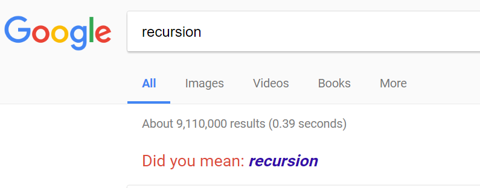

x |>
some_function(args) |>
some_function(args) |>
some_function(args) |>
some_function(args)A colleague of mine sent me the following R question:
I have a function that takes a list and does some stuff to it and then returns it. I then take that output and run it through the same function again. But I obviously don’t want to repeatedly type the function out, because I want the number of function replications to be a declared argument. I had little luck with functionals, although they seemed like an obvious choice.
It goes on to say that the solution should work in a magrittr pipeline, so that will influence how we solve the problem. Namely, we want to write a function that will transform a pipeline like:
into a one-liner like
x |>
repeated(.reps = 4, some_function, args)Winding up a while loop
The solution is repeated function application with some book-keeping. We could do this with a while-loop or even with recursion. Here’s the loop version.
repeated <- function(.x, .reps = 1, .f, ...) {
# A single, finite, non-negative number of repetitions
assertthat::assert_that(
length(.reps) == 1,
!is.na(.reps),
.reps >= 0,
is.finite(.reps))
# accept purrr-style formula functions
.f <- purrr::as_mapper(.f, ...)
# 0 .reps
value <- .x
while (.reps >= 1) {
value <- .f(value, ...)
.reps <- .reps - 1
}
value
}We start with some basic input-checking on the number of repetitions. assert_that() is like stopifnot(), but it spells out failures a little more verbosely. (To be honest, I don’t like that about half of the function is for checking the number of repetitions, but that’s how it goes…)
The next line uses purrr’s as_function(), so that we can also use formula-based anonymous functions. Here are examples with named functions, typical anonymous functions and formula-based anonymous functions.
# Regular named function
1:4 |> repeated(1, add, 2)
#> [1] 3 4 5 6
1:4 |> repeated(5, add, 2)
#> [1] 11 12 13 14
# Conventional anonymous function
1:4 |> repeated(2, function(x) x * 2)
#> [1] 4 8 12 16
# Formula-based anonymous function
1:4 |> repeated(4, ~ .x * 2)
#> [1] 16 32 48 64
# A weird kind of power tower!
1:4 |> repeated(4, ~ .x ^ 2)
#> [1] 1 65536 43046721 4294967296
((((1:4) ^ 2) ^ 2) ^ 2) ^ 2
#> [1] 1 65536 43046721 4294967296Because we are working in a pipeline, we expect the first argument to be some data. If we apply a function 0 times to the data, it should return the data. That’s why we set the value to the input before the loop.
# 0 function-applications
1:4 |> repeated(0, add, 2)
#> [1] 1 2 3 4This function is built around a while-loop that ticks down every time the function is applied. Generally, loops are not considered idiomatic R. I certainly try to avoid writing loops in R because the language has built-in functions that can abstract over a lot of iteration and the required book-keeping. If we are iterating over a dimension of something, like elements in a vector or columns in a data-frame, we can probably write a loop-free version. But here we are not looping over structure—we are looping through time! This is fundamentally different kind of problem than the kinds are that solved by Map() or lapply(). That’s why we had to invent our own higher-order function to handle this kind of iteration for us.
Drilling down with recursion

But we can make it loop-free, by torturing the code into recursion. Okay, it’s not that bad. Here I break it up into an input-handling step which sets the stage for the recursive function recursively_repeat().
rrrepeated <- function(.x, .reps = 1, .f, ...) {
# A single, finite, non-negative number of repetitions
assertthat::assert_that(
length(.reps) == 1,
!is.na(.reps),
.reps >= 0,
is.finite(.reps))
# accept purrr-style formula functions
.f <- purrr::as_mapper(.f, ...)
recursively_repeat(.x, .reps, .f, ...)
}
recursively_repeat <- function(.x, .reps, .f, ...) {
if (.reps == 0) {
.x
} else {
recursively_repeat(.f(.x, ...), .reps - 1, .f, ...)
# (It would be more correct to use `Recall()` so that renaming the function
# doesn't break this line... -- how's that for an R deep cut?)
}
}This is classic recursion. There are two branches. In the base case, when there are zero repetitions, the work is done and we return the input In the recursive case, we re-apply the function, take away one of the repetitions and then try the recursion again—and again and again until we bottom out and hit the base case.
This version works like its buddy:
1:4 |> repeated(5, ~ .x - 2)
#> [1] -9 -8 -7 -6
1:4 |> rrrepeated(5, ~ .x - 2)
#> [1] -9 -8 -7 -6
echo <- function(x) paste0(x, " (", x, ")")
"hello" |> repeated(2, echo)
#> [1] "hello (hello) (hello (hello))"
"hello" |> rrrepeated(2, echo)
#> [1] "hello (hello) (hello (hello))"The main drawback to the recursive version is its readability. I just find it harder to take in compared to the loop version—at least for a problem this simple. For more interesting data structures, the recursive version may prove more elegant and comprehensible.
A minor drawback to the recursive approach is its performance. It’s a little slower at the median level than the loop approach.
shuffle <- function(x) sample(x)
microbenchmark::microbenchmark(
with_while = repeated(1:100, 100, shuffle),
with_recur = rrrepeated(1:100, 100, shuffle),
times = 1000
)
#> Unit: milliseconds
#> expr min lq mean median uq max neval
#> with_while 1.040101 1.074952 1.186849 1.090201 1.151452 6.874101 1000
#> with_recur 1.129400 1.165602 1.283103 1.184601 1.263851 7.235600 1000But I don’t usually worry about performance unless I can notice the computation taking time.
What I will always notice is R trying to protect me from infinite recursion when I crank up the number of repetitions:
repeated(1:20, 1000, shuffle)
#> [1] 16 1 7 8 3 5 11 14 10 12 17 6 2 20 4 9 13 19 15 18
rrrepeated(1:20, 1000, shuffle)To recap, we had a problem that centered around a specific kind of iteration: repeatedly applying function on an input. To solve the problem, I wrote a higher-order function to handle this kind of iteration. My first pass at the problem used a simple while loop that ticked down a counter every time the function was called. Dared by the loop-free purism, I also wrote a recursive version, but for a problem this simple, it’s more of a curiosity.
Update: Trampolines? [Oct. 13, 2017]
Thanks to RStudio’s community forum, I’ve learned that there is a “trampoline” programming pattern for converting recursive functions into ones that use loops. Read the great thread here and follow-up blog post here.